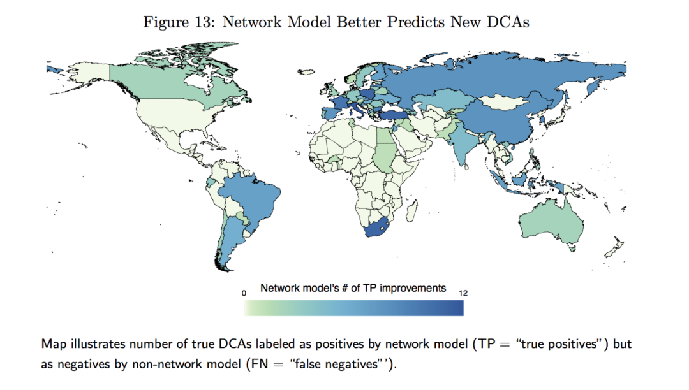
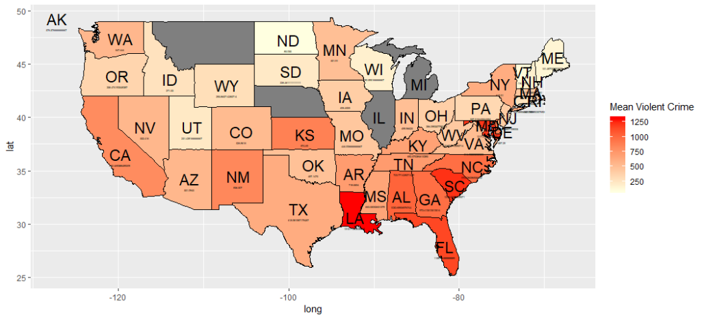
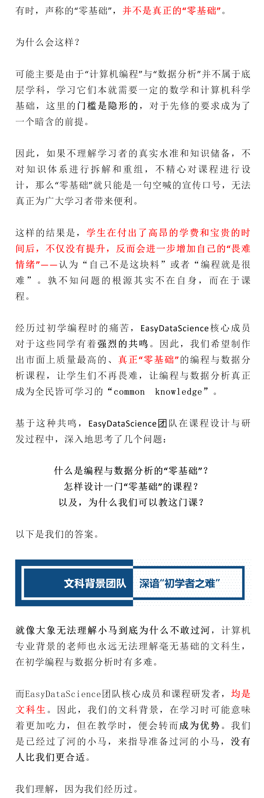
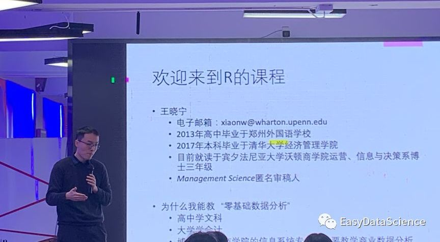
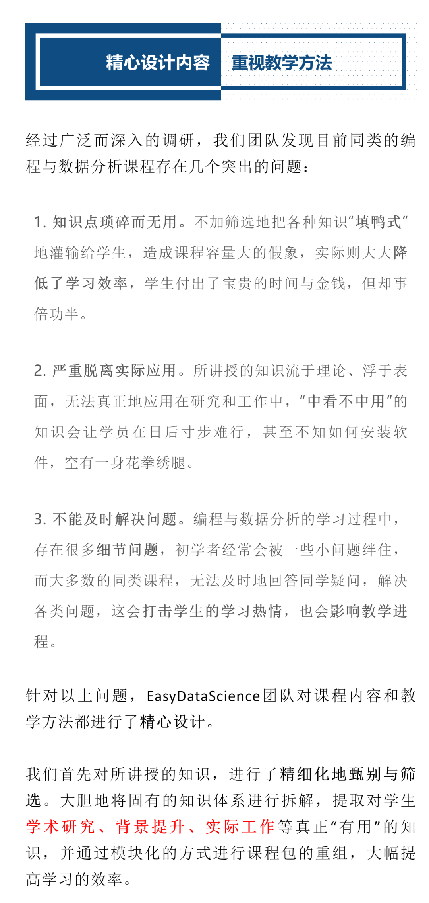
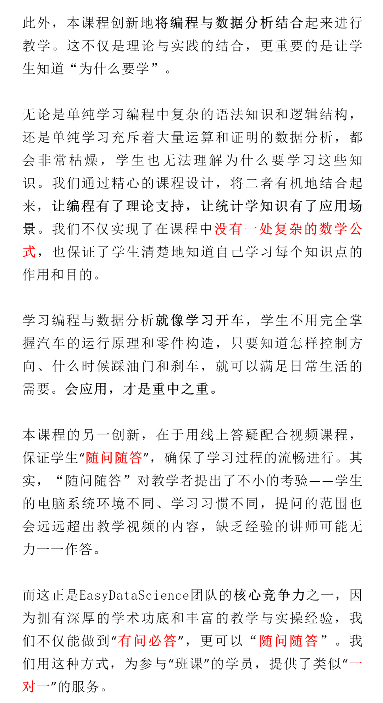
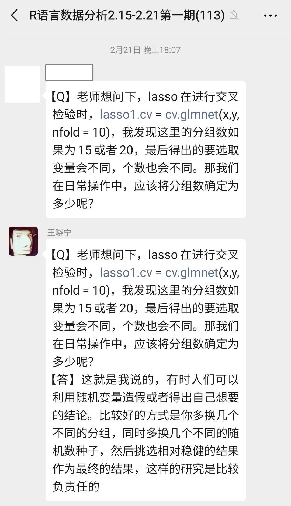

收录于合集
当你翻开 《IO》、《IS》、《APSR》、《AJPS》、《世界经济与政治》、《国际政治科学》 等期刊，是不是发现使用 定量研究方法 的论文越来越多？但是 相关性、显著、工具变量、稳健性检验 等名词是不是总让你一头雾水，更别提在自己的论文中使用了？

Source: Brandon J Kinne (2018, IO), “Defense
Cooperation Agreements and the Emergence of a Global Security Network.”
当作为 文科生 的你尝试自学 统计知识和R语言等统计软件
，是不是总是不得要领，浪费大量时间仍学不明白，教材看懂了仍然不会操作，最终卡在某处半途而废？
国际关系与政治学学习者为什么 一定要掌握定量研究方法 ？
-
读懂定量文章，这是对当代政治学与国际关系学习者 跨入学术门槛 的基本要求。
-
提升研究能力，定量方法是政治学与国际关系研究发展的 前沿和未来方向 之一，掌握这一重要研究技能刻不容缓。
-
快速发文章的“捷径” ，非实证研究和使用定性方法的实证研究往往需要深厚的积累和海量资料的阅读，定量方法则为初学者写出高质量的论文提供了“捷径”。
最适合政治学与国关专业文科生学习的 《R语言编程、数据分析与定量研究》 课程来了！
真正零基础 , 快速入门， 最系统、最易懂、最前沿、最具性价比 ，是你提升学术能力的不二之选！
往期课程广受赞誉，学员来自清华大学、北京大学、复旦大学、中国人民大学、浙江大学、上海交通大学、外交学院、香港大学、香港理工大学等 国内顶尖学府
；更有哈佛大学、斯坦福大学、耶鲁大学、约翰-霍普金斯大学、宾夕法尼亚大学、杜克大学、伦敦大学学院、帝国理工大学等十余所 海外顶尖高校
的学子慕名而来。
我们的学员来自各个专业领域，从本科生到博士生，甚至包括清华大学社会科学学院副教授、北京语言大学教师、大连外国语大学英语学院教师等……
课程主讲
********王晓宁
王老师是一位 “研究并使用” 定量方法的学者，相比于仅仅“使用”定量方法的研究者，能够更加高屋建瓴、深入浅出地讲解定量课程
- 本科毕业于 清华大学 经济管理学院，现就读于美国 沃顿商学院 ，攻读运营、信息与决策专业 博士 学位。
- 2019-2020学年在沃顿商学院 开设同款 “编程与数据分析”课程。
- 顶级学术期刊Management Science匿名 审稿人 ，2019年于领域顶级学术会议获得Kauffman Best Paper Award 。
- 高超的 授课技巧 与极强的 语言表达能力 ——能够更清楚直观地将复杂的逻辑与数学，用简单平直的语言阐释。
选 择R的理由
-
免费、开源、 简 单而强大
-
学术属性强， 国际关系学、政治学、经济学、社会学 等专业必备的定量分析工具
-
数 据可视化功能强大，可以画出更美观、更专业的图表（示例见下图）
-
简 洁高效，相关数据分析、机器学习、网络爬虫代码操作基本只需一行， 实 用性极高

如果还有疑问，就让 ** Nature**
告诉你：做学术为什么要用R（点击了解详情）。
真正零基础

R/R
Studio安装指南
R程序包安装debug说明
再如，我们通过自身的学习经历，意识到数据结构部分复杂繁琐的知识一旦脱离了实际应用，对于学生的学习热情会造成巨大的打击。而考虑到大多数零基础学生学习编程与数据分析的目的并非成为资深程序员，只是为了
快速上手 ，因此我们 将所有的理论知识与实际案例和真实数据相结合
，深入浅出地讲解清楚，保证学生能够在第一时间感受到所学知识的作用，提高学习积极性。
深厚的学术功底
高超的授课技巧
EasyDataScience团队的学术功底，为讲授编程与数据分析打下了坚实的基础。核心授课教师 王晓宁 ，本科毕业于 清华大学
经济管理学院，目前就读于美国 沃顿商学院 ，在攻读运营、信息与决策专业博士学位的同时，已经 在沃顿商学院开设了编程与数据分析课程 。
参与课程设计与运营的其他团队成员均为 清华大学 在读生或校友。 治学的严谨和对品质的极致追求
，是我们身上共同流淌的血液，也是课程质量的保障。上一期课程获得了 5.0的满分评价，这是来自学员们发自内心的认可，也代表他们真正学有所成。
上期课程获得来自300位学员的满分评价
但是，只有“高学历”是不够的，高质量的课程除了扎实的学术功底，还需要教师 高超的授课技巧 。
与同类课程大多出身工程师的讲师不同，本课程讲师的文科背景不仅能让他更好地 换位思考 ，更意味着较强的 语言表达能力
——能够更清楚直观地将复杂的逻辑与数学，用简单平直的语言讲述出来。 我们相信，语言的“高级感”不在于华丽的词藻或工整的骈句，而在于通俗易懂。
用最普通的字词，让你瞬间领会精神要旨 ，让每个人都能享受学习的乐趣，这是贯穿我们所有课程的核心思想。

主讲教师王晓宁在讲授线下课程



学生的所有疑问都得到认真细致的回答
在往期的课程里，我们对学生所提问题的解决率达到了 100% ，这也让我们有信心将“随问随答”的教学方法继续下去。 更重要的是，我们的讲师出身清华，提供了超过12小时的课程容量，以及与“一对一”同等级别的线上答疑服务，但课程售价却依然保持在 几百元 的区间，甚至不及一些同类别“一对一”课程1小时的价格。如此高的“ 性价比 ”，在目前的课程市场上，应该是独一无二的。 以上，就是我们的答案。 如果你也希望从 **真正的 “零基础”**开始学习一门编程语言，学习如何统计学和数据分析知识付诸应用，那么请相信EasyDataScience团队： 我们的课程正是 为你打造 。
课 程大纲
基 础模块
第 一部分：熟悉R语言 第一节：为什么学习R语言 第二节：R语言软件安装与介绍 第三节：R语言的循环 第四节：R语言的函数
第五节：R语言的逻辑判断 第 二部分：数据预处理 第一节：用R studio读入数据 第二节：用dplyr分析数据
第三节：用data.table处理大数据 第四节：数据可视化 第五节：数据文档：R Markdown 第 三部分：线性回归 第一节：概率统计基础知识
第二节：简单线性回归 第三节：多元线性回归 第四节：广义线性回归 第五节：模型选择 第 四部分：R语言高级工具包 第一节：网页爬虫与API
第二节：正则表达式 第三节：自然语言处理 第四节：社会网络分析
因 果推断初步
将 讲解因果推断的基础知识，这是 文 /商科学术研究必备能力。学生将掌握因果推断的常用工具，彻底理解 **“
内生性”、“识别策略”**等专有名词含义，并亲手操作真实数据， 重 现顶刊论文结果。
第一节：因果推断基本概念 第二节：随机实验 第三节：工具变量
数 据可视化进阶
将 充分掌握数据分析所有常用图形，画出 《 经济学人》杂志同水平的插图，学会制作更加 **“
炫酷”**的词云图与世界地图，让你的数据分析报告/论文/PPT 大 放异彩。
第一节：使用ggplot2程序包画图 第二节：使用wordcloud2画词云图 第三节：使用maps程序包画世界地图
机 器学习初步
机 器学习是人工智能时代 必
备技能。充分理解并掌握功能强大的LASSO、脊回归、Logistic回归、主成分分析等机器学习分类与聚类方法，能够极大提高数据筛选、降维与预测能力，帮助你
预 测股价走势、疫情扩散、比赛输赢等。
第一节：LASSO与脊回归 第二节：Logistic回归与分类 第三节：主成分分析
授 课方式
** ** ********** 视频授课 + 线上答疑 + 作业批改**
- 视 频课程
课程共 28小节 ，每小节包括两个部分：知识讲解 + R Studio实操示范
- 线 上答疑
主讲教师配合课程进行线上答疑，往期学员问题解决率达到 100%
- 作 业批改
每小节会布置作业题，可在规定时间内提交（非必须）并得到 批 改和反馈，参考答案可在课程结束后获得。
开 课时间
- 每周一 定期开课，答疑时间为期 2周
- 课程视频有效期 6 个 月
课 程定价
-
“国政学人” 读者定制版：1500元/人， 本次活动限 30 个名额， 限时优惠价 600 元/人
-
最具性价比，一门课即可学习： 统计学与线性回归基础 + ** R语言软件操作** ** +** ** 因果推断** ** +** ** 数据可视化分析** ** +** ** 机器学习 ！**
报名与咨询
扫描上方二维码 ** 抢购** 优惠价
课程咨询群
（内有 ** 助教** 答疑，9月9日前扫码有效）

好好学习，天天“在看”